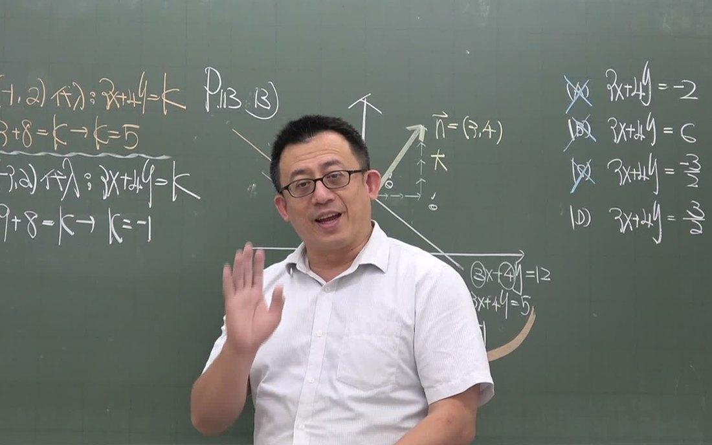

最新上架・點了就能玩
今天想練什麼？
NEW・國中／高中／技高數學闖關每一冊一張地圖，每 4 關一隻數學魔王，答對就能打。開始闖關 →NEW・遊戲陀螺對戰答數學題幫陀螺充能，答越多轉越久，一路打到冠軍。進入對戰 →線上作答數學線上練習國中、高中、技高 133 個單元，每題附逐步解析。開始練習 →歷屆試題會考真題111～115 年 125 題，看全國答對率。開始作答 →歷屆試題統測真題數學 A・B・C 共 375 題，逐題詳解。開始作答 →影片影片專區段考總複習、一分鐘觀念、數學改歌。看影片 →影片＋講義國中自然生物、理化、地科講解影片＋講義。去看看 →漫畫＋講義國中社會地理、公民、歷史 18 冊重點漫畫。去看看 →影片＋講義APCS 程式設計C++、Python 共 36 支影片＋講義。去看看 →列印數學練習卷164 個單元，一鍵出卷附解答。出一份卷子 →
16年民國 99 年立案，深耕羅東
115年獲選優質補習班
國中以上莊老師親自授課
只教數學府教終字第 0990094303 號
班別與上課方式
每個階段，接住下一階段。
五、六年級
國小高年級
計算做穩、應用題讀懂，上國中前打好底。
看班別 →國一～國三・會考國中
跟著學校進度顧段考，國三系統複習衝會考。
看班別 →高一～高三・學測分科高中
高二起分數 A、數 B，高三準備學測與分科。
看班別 →統測數學C・微積分技高・大一先修
照羅工進度準備統測；考完學測先修微積分。
看班別 →
莊老師親自授課先找出卡住的那一格，把觀念講清楚、題目練到熟。

進度寫在白板上今日考試、作業、明日考試，家長問起也答得出來。

回家還有得練解題影片、線上練習、闖關遊戲，每題都有解析。
預約試聽
先來聽一堂課，再決定。
- 加 LINE 好友LINE ID：
jenfoo2021，或點下方按鈕直接加入。 - 留言「預約試聽」附上孩子的年級與想加強的地方，老師會回覆適合的班別與時段。
- 到教室試聽實際上一堂課，覺得合適再報名。
常見問題
幾年級的學生可以來上課？
目前收國小五、六年級到高三的學生，另外也開大一微積分先修。國小五、六年級由莊老師自己培養的正賦團隊老師授課，國中、高中、技高到大一先修由莊老師親自授課。教室只教數學一科，講義和教法一致，升上國中能直接銜接。
上課時段和費用怎麼算？
依年級與班別而不同。請加 LINE 告訴老師孩子的年級與學校，老師會回覆目前適合的班別、上課時段與收費方式。
可以先試聽再決定嗎？
可以。加 LINE 留言「預約試聽」並附上年級，老師會安排一堂適合的正課，孩子實際上過、覺得合適再報名。
學期中可以插班嗎？
請先加 LINE 說明孩子的年級、目前學校進度與想加強的單元，老師會評估從哪個單元接手比較順，再安排班別。
補習班有立案嗎？
有。本班為宜蘭縣政府立案之短期補習班，立案字號府教終字第0990094303號，並獲中華民國補習教育全國總會與宜蘭縣補習教育事業協會推薦為 115 年優質補習班。
教室在哪裡？
宜蘭縣羅東鎮純精路二段 262 號，純精路上看到「正賦文理補習班」直式招牌就到了。
交通位置
羅東純精路上，看到「正賦」招牌就到了。
- 名稱
- 私立正賦文理短期補習班
- 地址
- 宜蘭縣羅東鎮純精路二段 262 號
- 電話
- 03-955-8652
- LINE
- jenfoo2021
- 立案字號
- 府教終字第 0990094303 號
- 授課科目
- 數學（國小高年級、國中、高中、技高、大一先修）